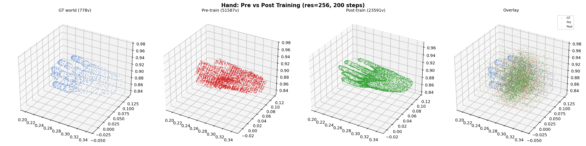
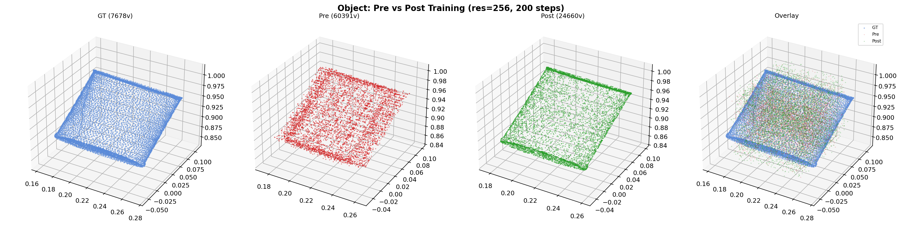

Full STream3R Pipeline Overfit with Latent Reconstruction Loss at Resolution 256
| Module | Role | Weight Init |
|---|---|---|
| stream3r.encoder (patch_embed + frame_blocks) | frozen | pretrained |
| stream3r.decoder (global_blocks) | frozen | pretrained |
| trellis2.sc_encoder | frozen | pretrained |
| trellis2.sc_decoder | frozen | pretrained |
| token_bridge (input_proj + output_proj) | optimized | random_init |
| Step | Latent Recon Loss | Hand Loss (monitor) | Object Loss (monitor) |
|---|---|---|---|
| 1 | 1068.10 | 0.030 | 0.042 |
| 20 | 10.54 | 0.016 | 0.024 |
| 40 | 1.14 | 0.016 | 0.024 |
| 60 | 0.178 | 0.017 | 0.024 |
| 100 | 0.027 | 0.017 | 0.024 |
| 140 | 0.016 | 0.017 | 0.024 |
| 200 | 0.0099 | 0.016 | 0.024 |

Left: GT hand (778v). Pre-training (red, 51K): scattered, unrecognizable. Post-training (green, 24K): clear hand shape aligned with GT. Right: overlay showing improvement.

Left: GT object (7.7K). Pre-training (red, 60K): scattered noise. Post-training (green, 25K): correct rectangular shape matching GT. Right: overlay.
| Pre-Training | Post-Training | Direct Trellis.2 (reference) | |
|---|---|---|---|
| Hand vertices | 51,587 (scattered) | 23,591 (hand shape) | 170,401 (best quality) |
| Object vertices | 60,391 (scattered) | 24,660 (correct shape) | 263,418 (best quality) |
| Shape quality | Unrecognizable | Recognizable, aligned | High fidelity |